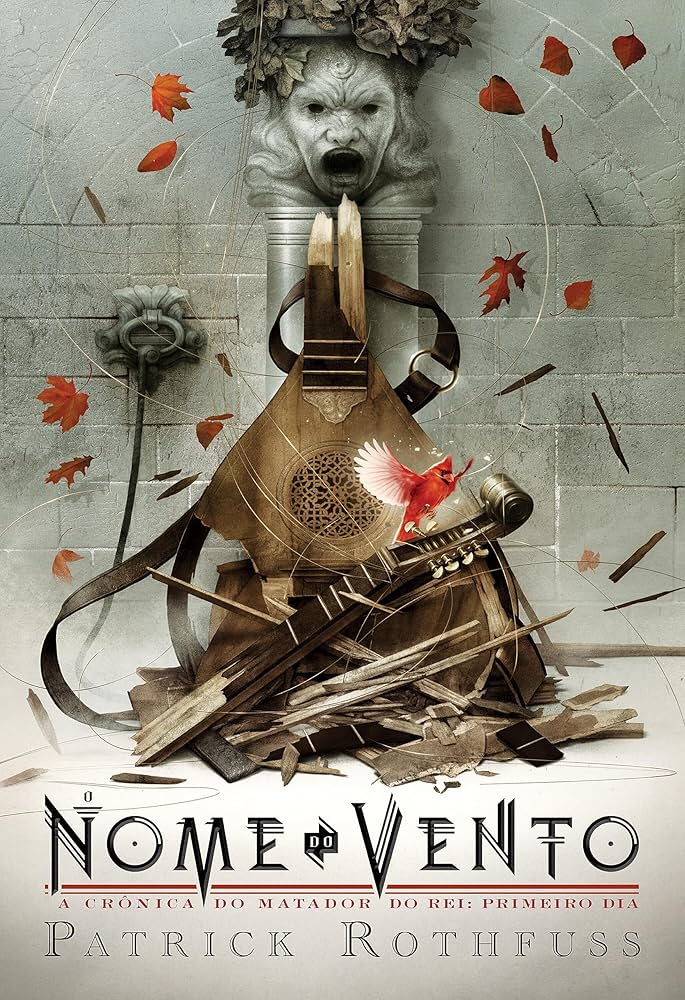
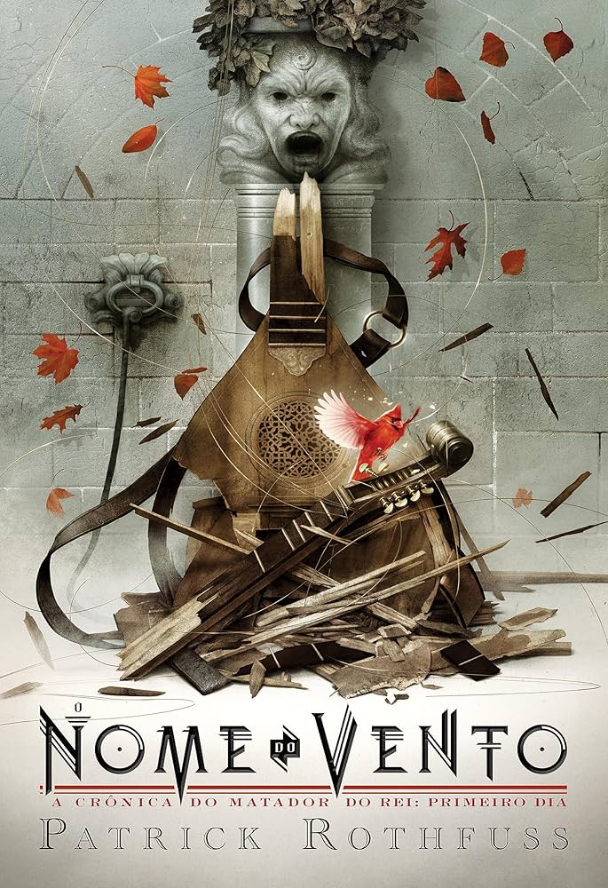
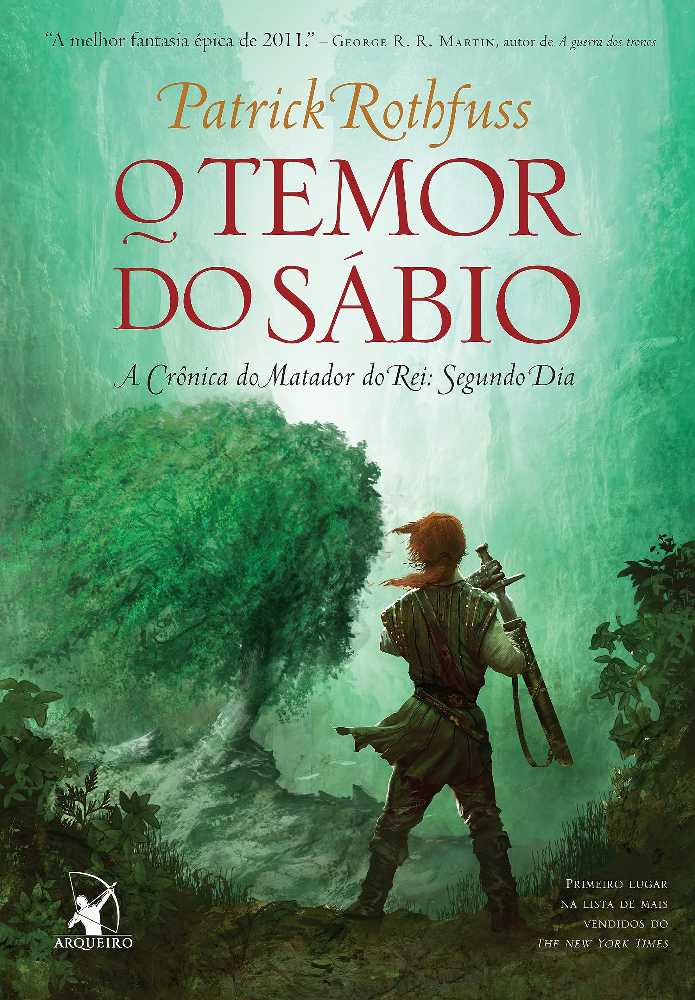

O Nome do Vento
O Nome do Vento é um livro de fantasia escrito pelo norte-americano Patrick Rothfuss, o primeiro da série intitulada A Crônica do Matador do Rei. Publicado no Brasil em 2009, pela Editora Arqueiro.
Como o livro também lida com o tema da magia (Kvothe, o personagem principal, frequenta a Universidade a fim de se tornar um Arcanista), o escritor norte-americano Orson Scott Card comparou o romance à série Harry Potter; porém, mais obscura e madura. O segundo livro da série tem como título O Temor do Sábio, no Brasil, e O Medo do Homem Sábio , em Portugal, e foi lançado em março de 2011 nos Estados Unidos. O título do terceiro volume deverá ser The Doors of Stone (As Portas de Pedra, em tradução livre). Além destes, o autor publicou um spin off chamado The Slow Regard Of Silent Things ( A Música do Silêncio, no Brasil), em 2014, tendo como protagonista a personagem Auri.
Sinopse
Em seu primeiro romance - ambientado em um mundo medieval alternativo - Rothfuss conta história de Kvothe, dono da hospedaria Marco do Percurso - que leva uma vida pacata, em um vilarejo sem grandes agitações. Até o dia em que salva a vida de um cronista durante o ataque noturno de “criaturas sombrias” e o abriga em sua hospedaria. Conhecendo uma misteriosa história sobre Kvothe, o cronista se oferece para escrever uma biografia do estaleiro, que exige então três dias para contá-la e afirma que dirá “nada além da verdade”.
“O Nome Do Vento” corresponde ao primeiro dia desta narrativa, iniciando o leitor na trajetória do jovem Kvothe, um rapaz pertencente a trupe de artistas itinerantes Edema Ruh, que se envolve com um misterioso grupo chamado Chandriano, e passa a perseguir o mesmo tentando compreender a causa e os segredos envolvidos no assassinato.
Além disso, Kvothe narra o início de sua trajetória na Universidade, onde segue o seu sonho de se tornar um grande arcanista e grande nomeador, enquanto busca informações sobre o perigoso Chandriano, vivendo inúmeras aventuras paralelas.
A magia de Rothfuss
No universo criado por Patrick Rothfuss, a magia é um aspecto recorrente e se apresenta de variadas formas, como seres fantásticos, e por determinadas “ciências” que apenas fazem sentido neste mundo, como a prática da “simpatia”, “siglística”, “nomeação” e outras mais próximas da nossa realidade como a “ficiaria” (os ártifices e inventores) e a “iátrica” (medicina).
A magia neste livro é muito semelhante a ciência da realidade, por ser regida por regras, técnicas muito específicas e limites estabelecidos pelo estudo e experiências. Este é considerado um dos “pontos altos” de Rothfuss: a criação de uma magia explicada, portanto “possível”, mas com elementos do fantástico.
Edições
 

O Temor do Sábio
No segundo volume das Crônicas do Matador do Rei, Kvothe continua a narrar sua juventude, dando sequência à sua formação na Universidade, onde enfrenta dificuldades financeiras e conflitos com o nobre Ambrose. Em busca de recursos para manter seus estudos, ele parte para Vintas em busca de um mecenas e acaba salvando o influente Maer Alveron de um envenenamento, conquistando sua confiança. A partir disso, vive diversas aventuras — enfrenta bandidos, encontra a mítica Feluriana e aprende a lutar com os ademrianos. Apesar dos feitos, seu passado como Edena Ruh desperta preconceito, levando à sua expulsão da corte. No entanto, retorna à Universidade com recursos garantidos, enfim alcançando a estabilidade para prosseguir sua jornada.
